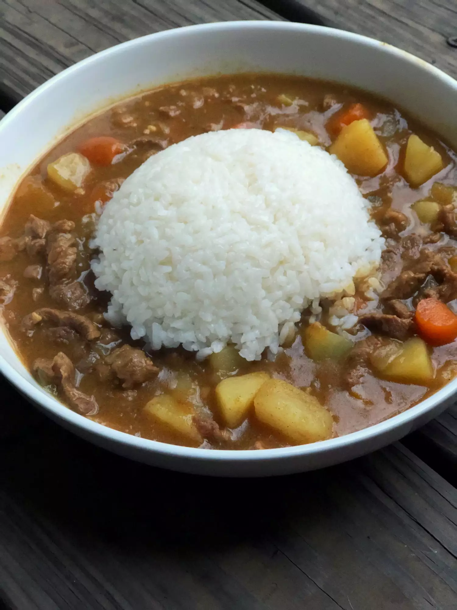

Japanese Curry

Description
Japanese curry is easily one of the top national dishes of Japan, behind sushi, ramen, and miso soup. It is distinctly Japanese, varying enough from Indian or Thai curries to be its own. Making Japanese curry in the Instant Pot® ensures the texture is perfect, and the meat, if used, is tender and juicy. What I was taught growing up: always, always use the roux as a base. Serve with rice!
Ingredients:
- 1 ½ tablespoons canola oil
- 1 Onion, chopped
- 1 ½ pounds beef, cut into 1/2-inch or 1-inch cubes
- 2 cloves garlic, minced
- 1 teaspoon grated fresh ginger
- 2 medium potatoes, peeled and cubed
- 2 carrots, peeled and chopped into 1/2-inch pieces
- ¼ teaspoon salt
- ¼ teaspoon ground black pepper
- 2 ½ cups beef broth
- 1 small apple, grated
- 1 tablespoon ketchup
- 1 tablespoon soy sauce
- 1 (3.5 ounce) container Japanese curry roux
Steps:
- Turn on a multi-functional pressure cooker (such as Instant Pot®) and select Saute function. Heat oil in the pot. Add onion; saute until almost translucent, about 3 minutes. Add beef, garlic, and ginger; saute until beef begins to brown, about 3 minutes more. Mix in potatoes and carrots. Cook, stirring constantly, for 2 minutes. Season with salt and pepper.
- Pour beef broth, apple, ketchup, and soy sauce into the pot. Break up curry roux into blocks and place on top of the beef mixture. Do not mix the blocks into the broth.
- Turn Saute function off. Close and lock the lid. Seal valve. Select high pressure according to manufacturer's instructions; set timer for 15 minutes. Allow 10 to 15 minutes for pressure to build.
- Release pressure using the natural-release method according to manufacturer's instructions, 10 to 40 minutes. Unlock and remove the lid. Stir broth to incorporate all the curry roux blocks, which should have melted over the top.